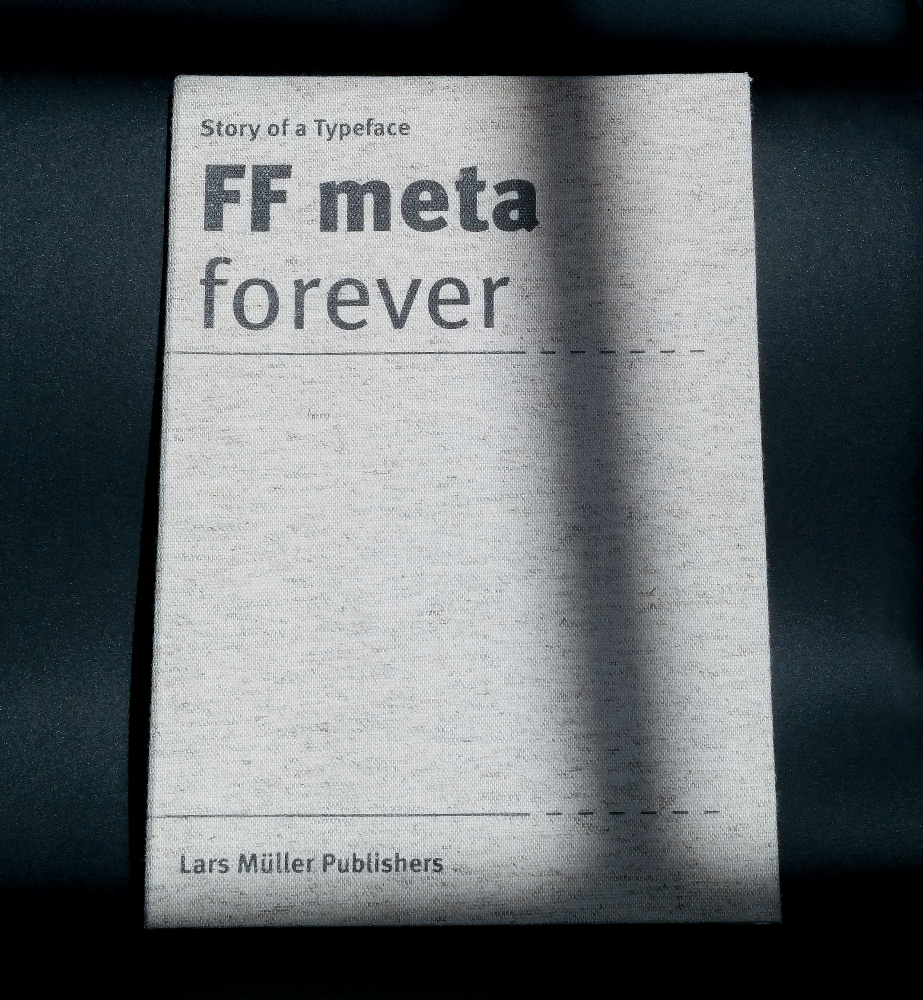
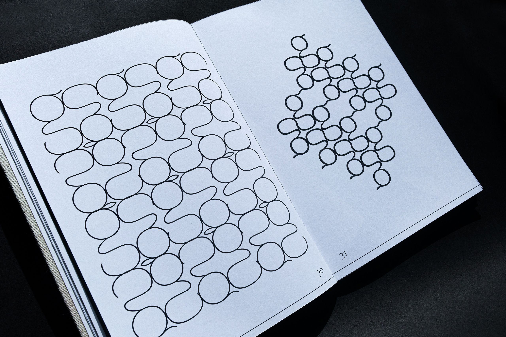
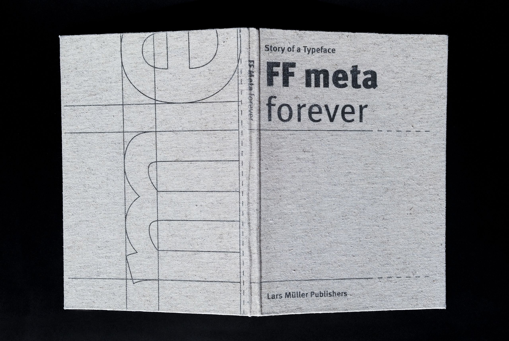
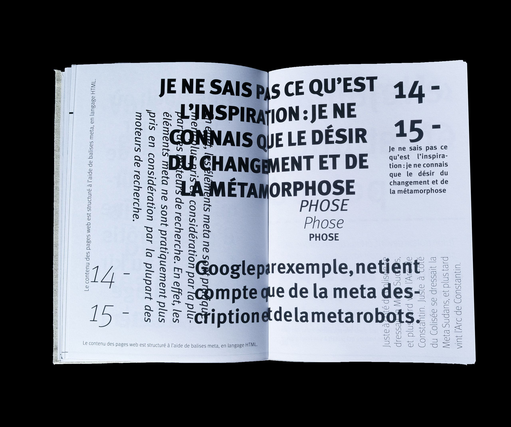
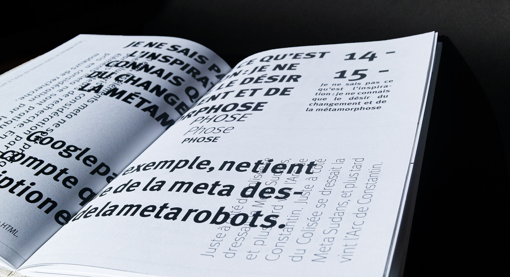
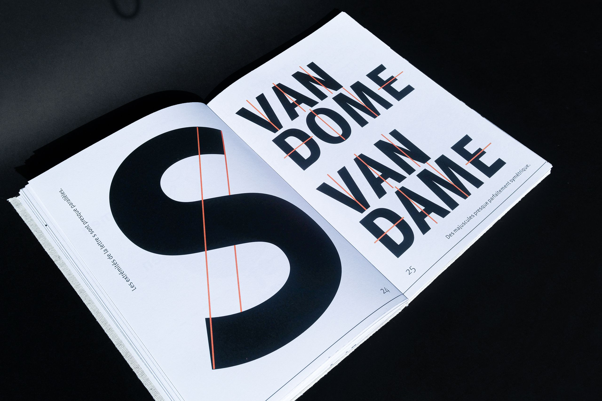
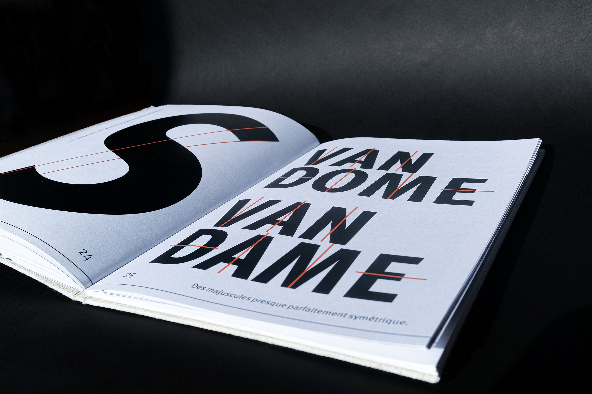
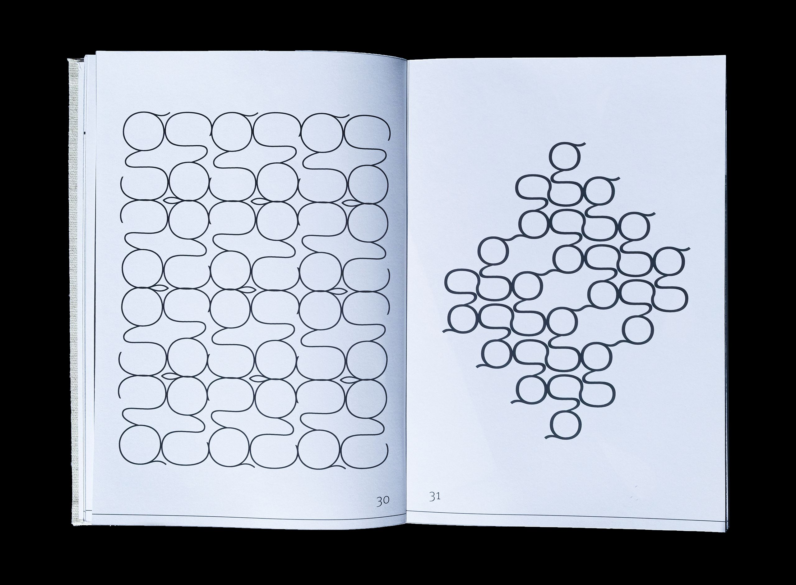

FF META
Il s’agit ici de la création d’un ouvrage entre spécimen et beau livre afin de présenter une typographie, la FF Meta de Erik spiekermann. J’ai choisi une mise en page simple et sérieuse à l’image de la maison d’édition qu’est Lars Müller Publishers. Dans cet ouvrage, on retrouve une brève histoire de la typographie FF Meta, ainsi que celle du typographe d’Erik spiekermann. Vient par la suite une partie qui permet de se rendre compte du potentiel des diérentes graisses de cette police d’écritures. J’ai pu explorer des jeux typographiques et de mises en page, tels des identités visuelles, des motifs ou des logos. L’intérêt que j’ai porté à cet ouvrage a été tant dans la recherche du contenu que du choix du papier et de la réalisation de l’objet finale
       